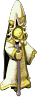
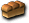

※各怪物的編輯請由標題的鉛筆圖示進行。掉落物品的編輯也可以從掉落物品欄的
盧亞斯森
米魯里斯森
斯歐米森
魔界村森
魯克西翁森
卡雷瓦拉森
伊卡洛斯周邊
萊比亞周邊
迪格邦克
 妖獸窟
妖獸窟
海賊村地城
海賊要塞
愛麗絲區域
格列佛區域
胡桃鉗區域
裡愛麗絲區域
裡格列佛區域
裡胡桃鉗區域
石化區域
冰之城
怪物城堡
公會城地城
新手路線｜兒童路線｜標準路線｜狂熱路線｜夢魘路線｜神級路線｜地獄路線
出現怪物
艾莉絲
法西內
博爾格檸檬砲蛙車
貝托斯凱洛斯
斯忒諾
歐律阿勒（綠）
艾莉絲
 艾莉絲 | Lv | AC | MC | AAR | SAR | 掉落物品 |
| HP:13000 | 50 | -10 | 20 | 60 | 40 | |
| 經驗值 | 名聲值 | 金錢 | 攻擊屬性 | 防禦屬性 | ||
| 1 | 3000 | 3000 | 隨機 | 隨機 | ||
| STR | DEX | INT | WIS | CON | ||
| 10 | 10 | 50 | 40 | 100 |
毒牙、惡魔之眼、凱蒂寵物
法西內
| 法西內 | Lv | AC | MC | AAR | SAR | 掉落物品 |
| HP:25000 | 70 | -30 | 10 | 10 | -10 | 玫瑰花束 |
| 經驗值 | 名聲值 | 金錢 | 攻擊屬性 | 防禦屬性 | ||
| 1 | 3000 | 3000 | 隨機 | 隨機 | ||
| STR | DEX | INT | WIS | CON | ||
| 20 | 50 | 150 | 50 | 150 |
Pumkin劈擊（遠距離攻擊）、毒牙、隱形
博爾格檸檬砲蛙車
| 博爾格檸檬砲蛙車 | Lv | AC | MC | AAR | SAR | 掉落物品 |
| HP:4500 | 80 | 30 | 0 | 0 | -20 | 山羊頸肉、 黃色夏威夷裝 黃色夏威夷裝 |
| 經驗值 | 名聲值 | 金錢 | 攻擊屬性 | 防禦屬性 | ||
| 1 | 3000 | 3000 | 水 | 水 | ||
| STR | DEX | INT | WIS | CON | ||
| 71 | 11 | 31 | 31 | 31 |
葡萄炮
貝托斯凱洛斯
| 貝托斯凱洛斯 | Lv | AC | MC | AAR | SAR | 掉落物品 |
| HP:8500 | 99 | 30 | -40 | 90 | 70 |  麵包 |
| 經驗值 | 名聲值 | 金錢 | 攻擊屬性 | 防禦屬性 | ||
| 1 | 3000 | 3000 | 隨機 | 隨機 | ||
| STR | DEX | INT | WIS | CON | ||
| 81 | 3 | 41 | 41 | 41 |
備註
| 切斯曼騎士 | Lv | AC | MC | AAR | SAR | 掉落物品 |
| HP:15000 | 99 | 55 | -40 | -10 | -10 |  蘋果、黃色夏威夷裝 蘋果、黃色夏威夷裝 |
| 經驗值 | 名聲值 | 金錢 | 攻擊屬性 | 防禦屬性 | ||
| 1 | 3000 | 3000 | 暗黑 | 暗黑 | ||
| STR | DEX | INT | WIS | CON | ||
| 3 | 41 | 41 | 41 | 41 |
備註
| 布雷克卡德曼 | Lv | AC | MC | AAR | SAR | 掉落物品 |
| HP:11000 | 99 | -15 | 20 | 10 | -10 | 黃色夏威夷裝、 蘋果酒 蘋果酒 |
| 經驗值 | 名聲值 | 金錢 | 攻擊屬性 | 防禦屬性 | ||
| 1 | 3000 | 3000 | 風 | 無 | ||
| STR | DEX | INT | WIS | CON | ||
| 61 | 91 | 41 | 41 | 41 |
備註
斯忒諾
| 斯忒諾 | Lv | AC | MC | AAR | SAR | 掉落物品 |
| HP:13000 | 99 | 5 | 20 | 40 | 20 | 蘋果酒 |
| 經驗值 | 名聲值 | 金錢 | 攻擊屬性 | 防禦屬性 | ||
| 1 | 3000 | 3000 | 神聖 | 神聖 | ||
| STR | DEX | INT | WIS | CON | ||
| 41 | 71 | 81 | 71 | 41 |
接近時逃跑、Andios電擊（遠距離攻擊）、混沌
 梅杜莎 梅杜莎 | Lv | AC | MC | AAR | SAR | 掉落物品 |
| HP:13000 | 99 | 5 | 20 | 40 | 20 | |
| 經驗值 | 名聲值 | 金錢 | 攻擊屬性 | 防禦屬性 | ||
| 1 | 3000 | 3000 | 隨機 | 隨機 | ||
| STR | DEX | INT | WIS | CON | ||
| 41 | 71 | 81 | 71 | 41 |
接近時逃跑、Andios電擊（遠距離攻擊）、混沌
歐律阿勒（綠）
| 歐律阿勒（綠） | Lv | AC | MC | AAR | SAR | 掉落物品 |
| HP:13000 | 99 | 5 | 20 | 40 | 20 | 蘋果酒、灰色西裝 |
| 經驗值 | 名聲值 | 金錢 | 攻擊屬性 | 防禦屬性 | ||
| 1 | 3000 | 3000 | 神聖 | 神聖 | ||
| STR | DEX | INT | WIS | CON | ||
| 41 | 71 | 81 | 71 | 41 |
接近時逃跑、Andios電擊（遠距離攻擊）、混沌